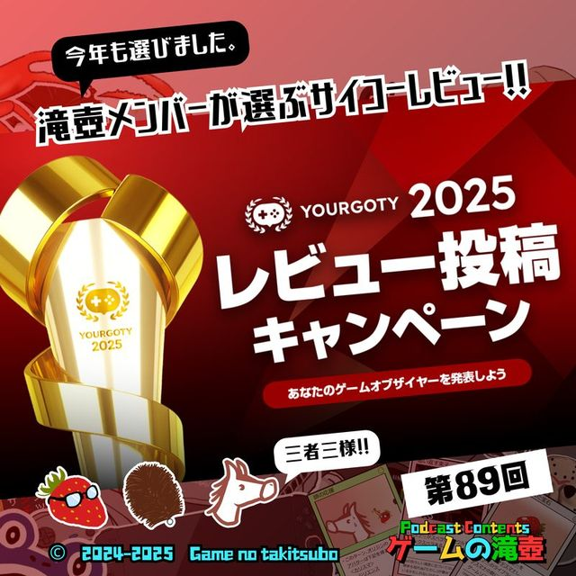
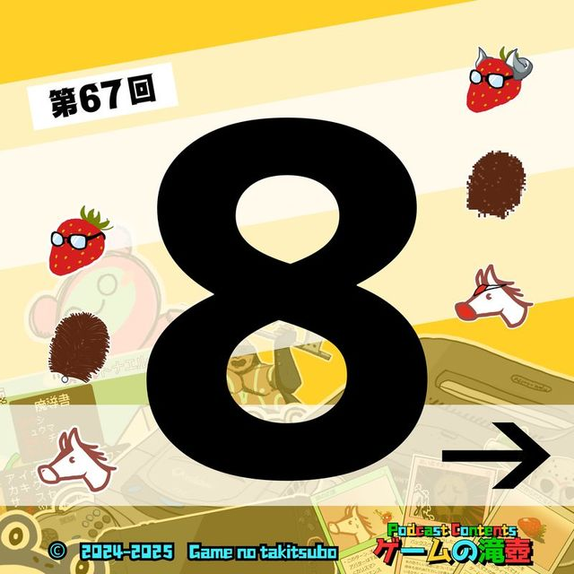
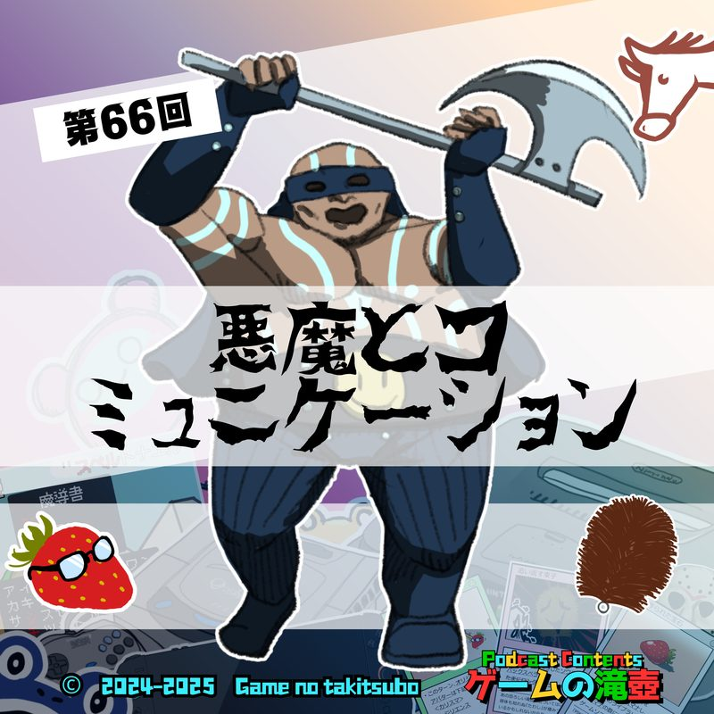
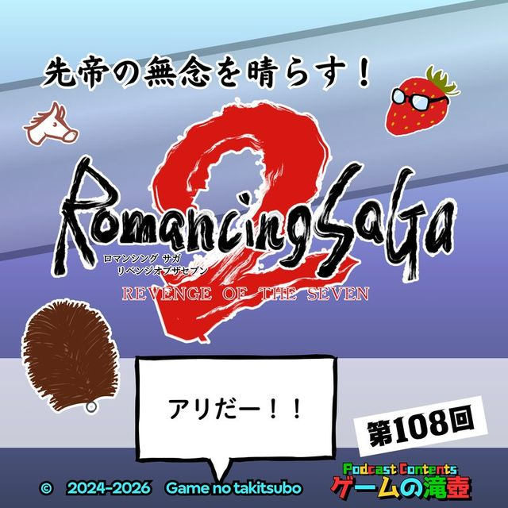
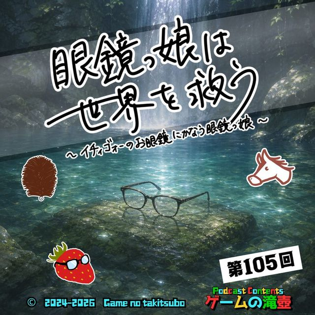
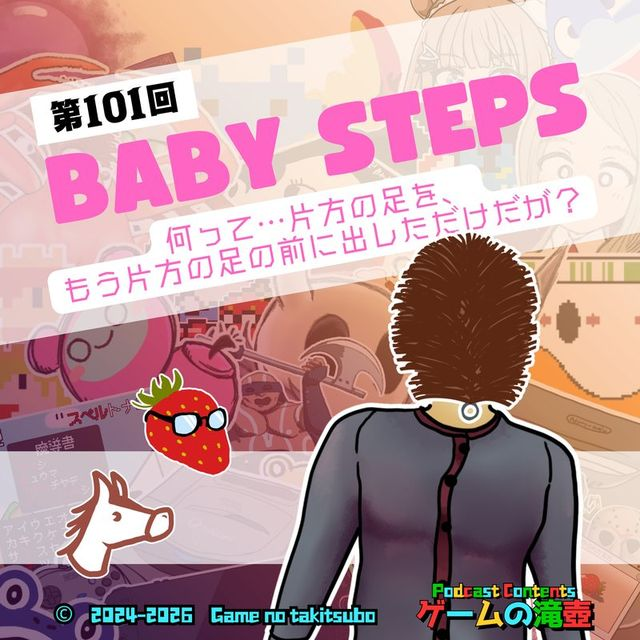
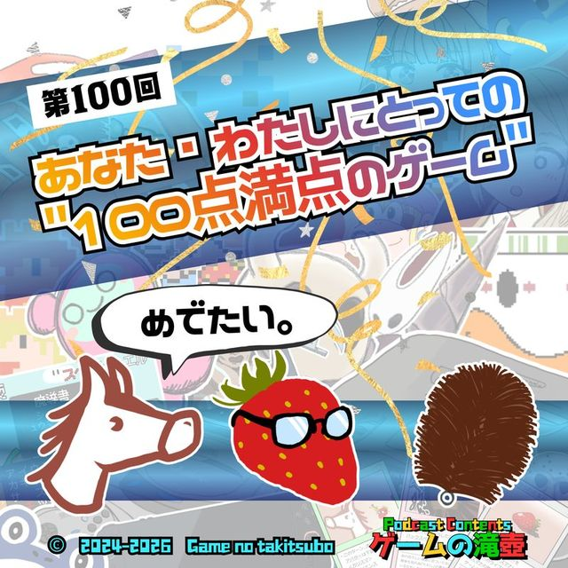
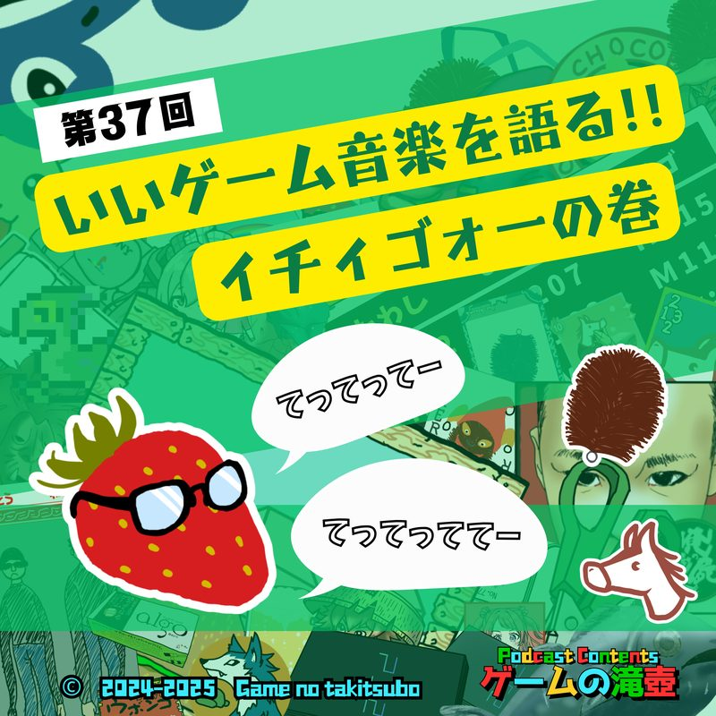
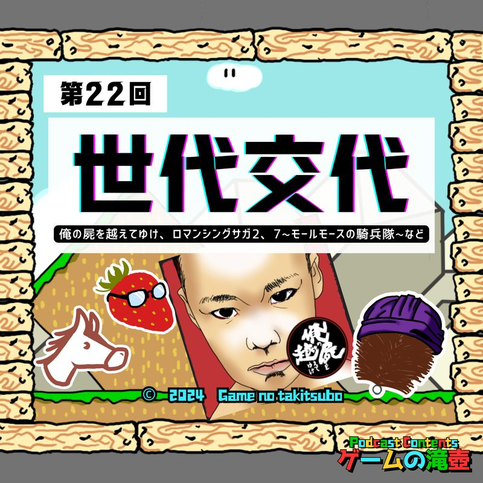

ペルソナシリーズ
ポッドキャスト「ゲームの滝壺」で「ペルソナシリーズ」が話題に出た回の一覧です。
滝壺での登場 3回トークの中でたびたび話題に出ているタイトルです。

#892026.01.21💬 トーク内で登場 滝壺メンバーが選ぶサイコーレビュー！ YourGOTY2025レビュー投稿キャンペーン ゲームの滝壺が選んだYourGOTY2025レビュー3本+8本を大紹介！
#672025.09.02💬 トーク内で登場 ゲーム『8番出口』→ 映画『8番出口』→ 小説『8番出口』 映画版8番出口の感想と合わせて、原作ゲームと小説についても話します！
#662025.08.27💬 トーク内で登場 悪魔とコミュニケーション 悪魔にまつわるゲームの回ですが、ほぼメガテンの（浅めの）話に終止しております。 以降のコーナーの方が聴きごたえあるかも。TITLES IN SERIESシリーズ作品が登場した回

#1082026.06.03💬 トーク内で登場 先帝の無念を晴らす！ ロマサガ2 リベンジオブザセブン この回の作品: ペルソナ3
#1052026.05.13💬 トーク内で登場 眼鏡っ娘は世界を救う ～イチィゴォーのお眼鏡にかなう眼鏡っ娘～ この回の作品: ペルソナ4、ペルソナ5
#1012026.04.15💬 トーク内で登場 Baby Steps「何って…片方の足を、もう片方の足の前に出しただけだが？」 この回の作品: ペルソナ4
#1002026.04.08💬 トーク内で登場 100点満点のゲーム！！ この回の作品: ペルソナ4 #862026.01.07💬 トーク内で登場
新春！ 五十音全部にふさわしいゲームタイトルを集めて滝壺かるたを作ろう！
この回の作品: ペルソナ5
#862026.01.07💬 トーク内で登場
新春！ 五十音全部にふさわしいゲームタイトルを集めて滝壺かるたを作ろう！
この回の作品: ペルソナ5

#372025.02.05💬 トーク内で登場 いいゲーム音楽を語る！ ～イチィゴォーの巻～ 逆転裁判、クロノ・トリガー、てってってー… この回の作品: ペルソナ4
#222024.10.23💬 トーク内で登場 俺屍、ロマサガ2、7〜モールモースの騎兵隊〜…世代交代要素のあるゲームを20作品くらい語る！ この回の作品: ペルソナSAME SERIES同シリーズのタイトル
TALKED TOGETHER同じ回で話題に出たタイトル
🎧 気になった回は、各ページのプレイヤーからすぐ再生できます。
「ペルソナシリーズ」の話がもっと聴きたくなったら、おたよりでリクエストしてもらえると番組が喜びます。